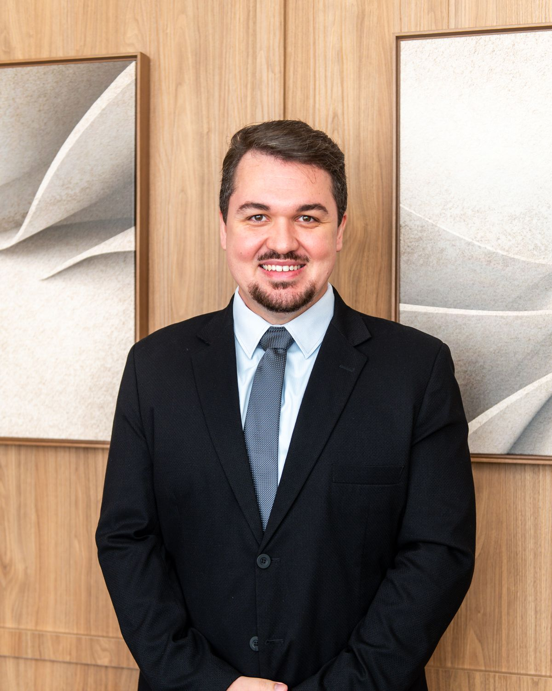
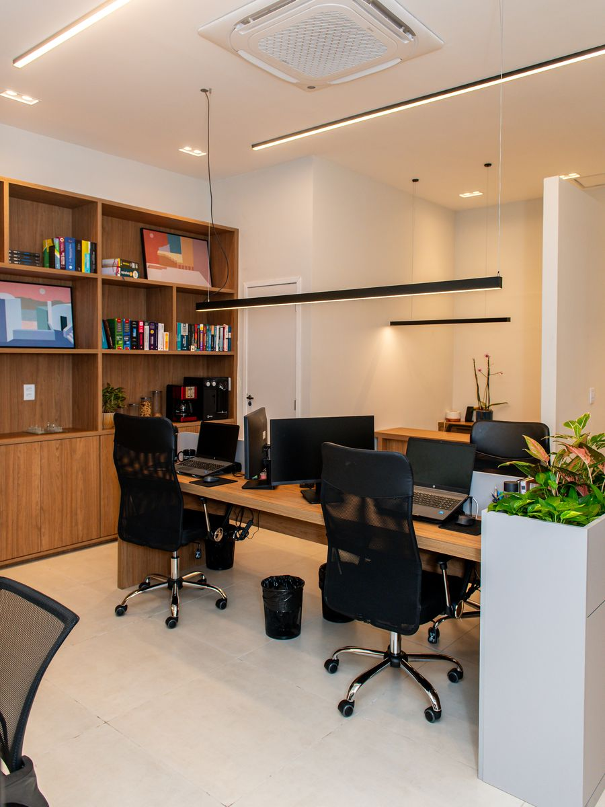
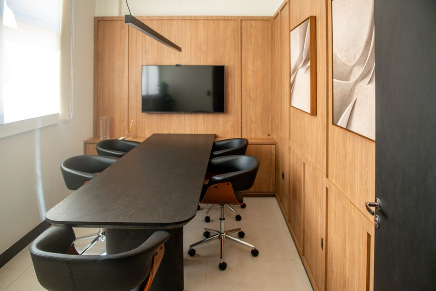
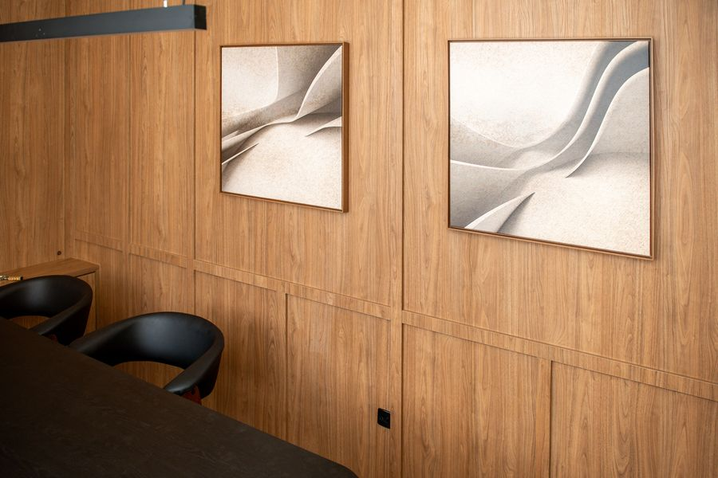

Advocacia
Solano, Neves & Novaes Advocacia
Escritório boutique em Volta Redonda, com atuação em direito patrimonial, empresarial e médico. Problemas resolvidos com estratégia, técnica e resultado.
Advogado · OAB/RJ 225.124 · Volta Redonda

Sócio do Solano, Neves & Novaes Advocacia, escritório boutique de direito patrimonial em Volta Redonda. Reconstruiu o fluxo de trabalho do escritório com inteligência artificial e ensina advogados a fazer o mesmo.
Sobre
Advogado cível com atuação concentrada em direito patrimonial. Formado pelo Centro Universitário de Barra Mansa e pela Faculdade de Direito da Fundação Escola Superior do Ministério Público do Rio Grande do Sul, integrou o NUPED (Núcleo de Pesquisa em Direito) e iniciou a carreira ainda durante a formação, na Defensoria Pública do Estado do Rio de Janeiro. Passou pela advocacia associada em escritório com mais de 15 anos de atuação e pela assessoria legislativa da Câmara Municipal de Volta Redonda antes de fundar o escritório que originou o atual Solano, Neves & Novaes Advocacia, escritório boutique do qual é sócio.
Nos últimos anos, reconstruiu o próprio fluxo de trabalho com inteligência artificial, da primeira reunião com o cliente à peça protocolada e ao recurso, e transformou essa prática em método: skills, agentes e rotinas que hoje operam casos reais, todos os dias. É o criador do Método Solano e do curso Advocacia Agêntica, em que demonstra, sobre um caso verdadeiro, o que a advocacia com IA muda na prática. Escreve sobre direito patrimonial e IA na advocacia em uma newsletter no Substack.
Atuação
Advocacia
Escritório boutique em Volta Redonda, com atuação em direito patrimonial, empresarial e médico. Problemas resolvidos com estratégia, técnica e resultado.
Treinamento de IA para advogados
Curso que demonstra, sobre um caso real, o fluxo completo do escritório com inteligência artificial: da primeira reunião com o cliente à peça protocolada e ao recurso. A base é o Método Solano, o conjunto de skills, agentes e rotinas que operam casos reais todos os dias.
Curso · Palestra · Treinamento in-company para escritórios e departamentos jurídicos
O escritório



Solano, Neves & Novaes Advocacia · Volta Redonda, RJ